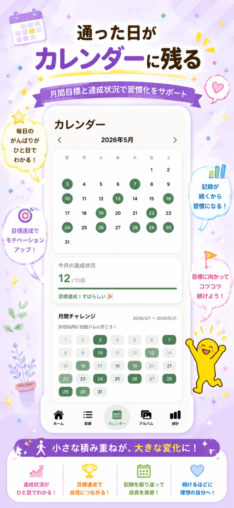
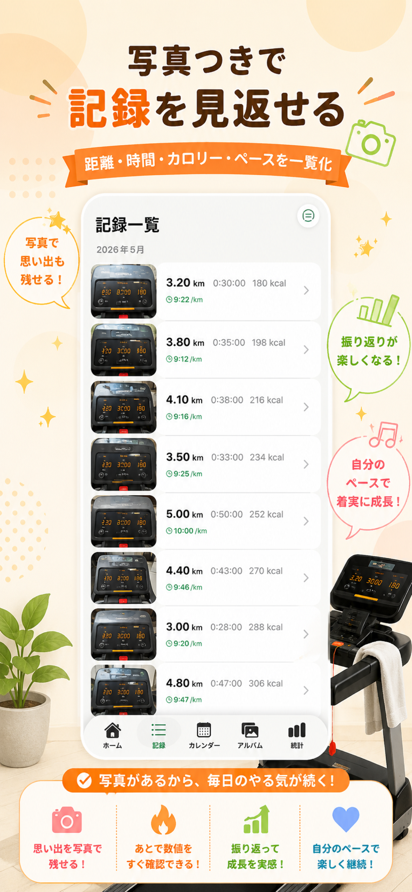
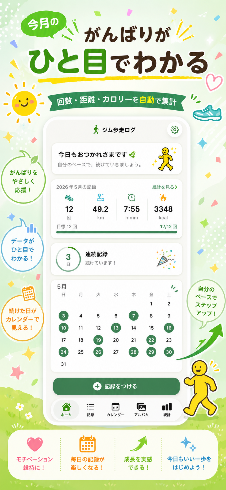

入力はすばやく
その日の運動を、距離、時間、消費カロリー、ペースと一緒に保存。ジムから帰る前にさっと残せます。
ジムでのウォーキングやランニングを、写真つきでやさしく記録。距離、時間、消費カロリー、月ごとの積み上がりをひと目で振り返れます。

その日の運動を、距離、時間、消費カロリー、ペースと一緒に保存。ジムから帰る前にさっと残せます。
トレッドミル画面やメモ代わりの写真を記録に添付。あとから見返したときに、その日の内容を思い出しやすくなります。
月ごとの回数や合計距離を確認しながら、自分のペースで継続。運動習慣を無理なく育てられます。

